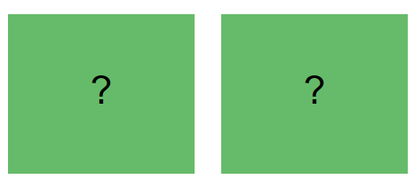

Welcome to the Casino!
Today, you find yourself in a casino.
In a series of games you are interacting with two slot machines.
The slot machines are represented by green squares:

Each slot machine tends to pay out a certain amount of average points during one game (20 choices), but there is noise on the points on any given play.
For example, the average points for the slot machine on the right might be 50 points, but on the first play we might see 38 points because of the noise in the lottery process.
On the second play we might get 56 points.
If we take the right slot machine again on the third trial, we might get 51 points this time.
... and so on, such that if we were to play the right slot machine 20 times in a row we might see that we can expect on average around 50 points from it.
Both slot machines might have different amounts of noise, but their average outcome will be determined for one game. Between games the noise and average outcome of each slot machine might change.
Depending on the game type, your goal is either to get or retain as many points as possible. You will get paid a bonus depending to how well you manage to do this.
Ready To Start?
Reward Game
In this game you want to maximize your overall points.Your payment will be determined by the points you earn from your choices compared to the minimum points you could have obtained.
You can select between two slot machines by clicking on the "←" and "→" keys, for left and right slot machines accordingly, on your keyboard.
After selecting a slot machine a number of points will be drawn from the slot machine you selected.
Your points will be added to the counter at the bottom of the page.
In each game, which has 20 choices, the average values and amounts of noise of each of the slot machines stay the same.
Afterwards the next game starts with possibly different average values and amounts of noise.
You will have one practice game.
Ready to Start?
Loss Game
In this game you can lose part of your bonus payment. You want to minimize your loss.You begin with a score of the maximum potential loss, and your payment is determined by the number of points you manage to preserve.
You can select between two slot machines by clicking on the "←" and "→" keys, for left and right slot machines accordingly, on your keyboard.
After selecting a slot machine a number of points will be drawn from the slot machine you selected.
The points will be substracted from the counter at the bottom of the page.
In each game, which has 20 choices, the average values and amounts of noise of each of the slot machines stay the same.
Afterwards the next game starts with possibly different average values and amounts of noise.
You will have one practice game.
Ready To Start?
You played all games!
Now we will ask you a few questions. Please answer them honestly. Do not navigate back to this page!